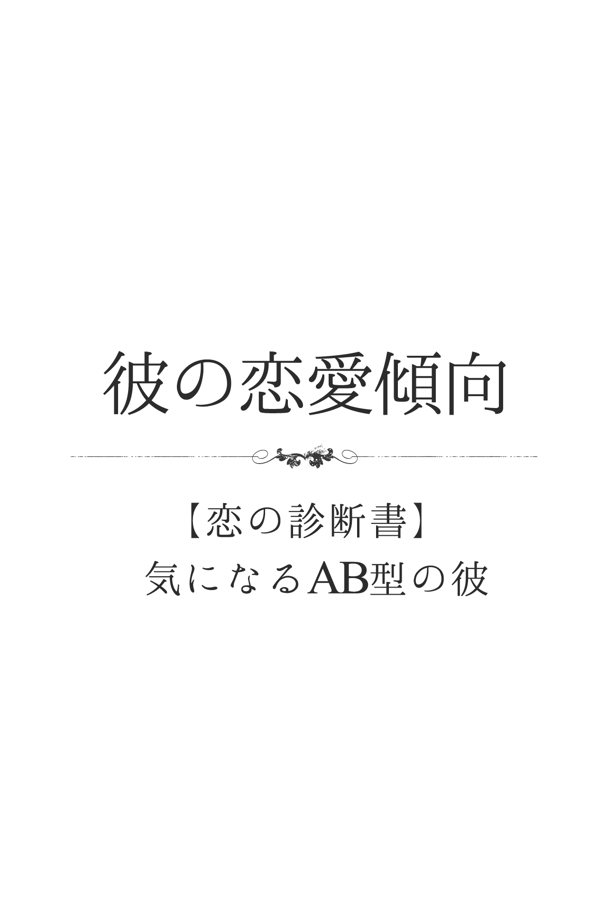

| 【恋の診断書】気になるＡＢ型の彼 (得トク文庫) | |
| マーク・矢崎 | |
| (2015) | |

1 、はじめに
世の中には、たくさんの占いや診断があります。中でも「血液型診断」は、合コンや飲み会、仕事場や友だち同士の間でも、事あるごとに話題に上るのではないでしょうか。その人の何気ないひと言や行動から「あーＢ型っぽい！」「やっぱり、Ａ型だからねー」なんて口にしたことが、あなた自身、何回かあるのでは？ あなたが好きな男性、あるいは彼氏は何型ですか？ すでに、今の段階で性格と血液型を照らし合わせて、相手のことを何となく判断しているかもしれませんね。恋を上手に進展させていくためには、やはり相手をよく理解し、それに合ったアクションを起こしていくことが大切です。そのひとつの目安やヒントとして「血液型診断」を活用するのは、とても有効的だと思います。この本には、基本的な性格はもちろん、さまざまなシチュエーションを想定した診断を詰め込んでおきました。その中には、きっとあなたが知りたかった項目があるはずです。あなた自身が楽しみながら、そして、ふたりの恋がよりハッピーな展開を迎えられるために、この本が少しでもお役に立てたら幸いです。
2 、彼の基本的性格
彼って、いったいどんな人？
クールで、知的なイメージを漂わせる彼。頭の回転が速く、常に周囲の状況を冷静に把握し「損得」を考えながら動くところがあるでしょう。基本的に、プライベートなことを詮索されることが嫌いで「自分は自分、人は人」をモットーにしています。でも、意外とひょうきんな一面もあり、仲間内で衝突が起こりそうなとき、さり気なくのんきな発言をして場を和ませることも。また、強い態度や批判を受けると、人知れず思い悩む打たれ弱いところがあります。
彼は、自意識過剰なタイプ？
彼は、自意識過剰ではないでしょう。周りからすると、クールで格好つけているように見えるかもしれませんが、本人はただ自然体でいるだけ。頭の回転が速く、行動力もあるAB 型にとっては、何事も「できて当たり前」なのであって、周りに自慢するほどのことは特にないのです。もともと、感性が豊かなこともあり、ファッションや立ち居振る舞いに気をつかったり、自分なりのこだわりはあったりしますが、人と比べることに興味はないでしょう。
彼は、第一印象で損するほう？
彼は、第一印象で損することが多いでしょう。ファッションや髪形など、外見的要素が個性的なので、相手は身構えてしまうことが少なくありません。また、ポーカーフェイスで、喜怒哀楽がつかめませんから、相手はどう対処していいのか戸惑ってしまいます。しかも、サービス精神が乏しいために、愛想笑いもぎこちなく、その複雑な性格を露呈してしまいがち。ある意味、インパクトはありますが「個性的」「不思議な人」といった印象を与えやすいでしょう。
彼は、甘え上手？
何事も自分でさっさと片づけたがる彼は、基本的には、人にあまり甘えることはありません。ただ、状況によっては素直に人を頼ることができるので、なかなかの甘え上手といっていいかも。しかも、普段はむやみに誰かを頼ることがない分、甘えられるほうも新鮮に感じるのか、ついOK してしまいます。いつもクールで知的な雰囲気を醸し出している彼から、下手に出られてお願いされると、甘えられる側はまんざらでもない気分になるようです。
彼は、社交性が高いほう？
物静かで、クールなたたずまいを崩さない彼。初対面のあいさつも、元気に明るくハキハキにとはいかず、微笑を浮かべて軽く会釈する程度であることが多いでしょう。基本的に、自分から話しかけたり、場を盛り上げようとしたりすることはなく、相手から聞かれたことに理路整然と応えるというスタイル。もともと、頭の回転が速く、知識や情報が豊富なので、人の話に合わせるのは上手ですが、一歩踏み込んで和やかなムードにすることは苦手でしょう。
彼は、新しいもの好きなタイプ？
感性が豊かで、自分というものをもっている彼。特に、おしゃれのセンスには天性のものがあるので、流行や情報に敏感です。ごく自然に新しいものに興味や関心を示し、それが自分にとってふさわしいと思えば、積極的に取り入れていきます。ただし、何でも新しければいい、というわけではありません。気に入ったものであれば、流行に関係なくずっと大切にしますし、そのうえで新しいものをコーディネートしたり、アレンジしたりして自由に楽しむでしょう。
彼は、プライドが高いほう？
彼は、とてもデリケートでプライドの高いタイプ。何事に関しても完ぺきを求めていますから、ミスや失敗はもちろん、人に笑われるようなことは自分自身が許しません。特に、みっともないことや恥ずかしい姿をさらすことは絶対にしたくない、という気持ちが人一倍強いでしょう。表面的にはクールなので、その表情からはわかりにくいでしょうが、仮にファッションで他の人よりも自分が見劣りすると思えば、腹の中では「次の機会までには必ずリベンジする！」と心に誓います。
彼は、人と自分を比較して落胆しやすいタイプ？
彼は、人と自分を比較して、落胆するようなことはあまりないでしょう。もともと、周りのことは気にせず、自分のやるべきことをきっちりこなすことをモットーにしているAB 型なので、人に関心を向けない傾向のほうが強いのです。何事も完ぺきを求め、日々自分磨きを怠らない、といっても過言ではないAB 型ゆえに、自分に確かな自信をもっています。その分、自分よりも劣っていると見ていた相手が、周りから高い評価を得ると落胆することはあるようです。
彼は単純？複雑？
ふたつの顔をもつ彼。普段は控えめでおとなしい印象を与えますが、いざとなると突飛な行動に出て、周囲を驚かしたりするタイプです。複雑男の典型といえるでしょう。特に恋愛シーンでは、さり気ないアプローチをしたり、フェミニストぶりを発揮して｢いい人」な自分を演出します。ところが、ふたりきりになったとたん、狼に変身したりするケースもあります。また、交際中の女性がいるにもかかわらず、陰で浮気を楽しんだりできる一面ももっているでしょう。複雑系の二重人格男だと思ってつき合ったほうが賢明かも。
彼は積極的？それとも不器用な男？
ソフトなムードの持ち主で、人当たりは柔らかですが、あまり自分の心を見せたがらない彼。決して積極的なタイプとはいえないでしょう。特に恋愛シーンにおいては、気になる女性が現れても、相手の性格や嗜好をじっくりチェックします。そして、さり気なく話しかけたりして、相手が自分に好意をもってくれているとわかったうえで、初めて本格的なアプローチを開始するような慎重な男性です。とはいえ、不器用では決してありません。じっくりと着実に、狙った女性を自分に惹きつけていくような狡猾なテクニックを駆使できるタイプです。
彼は直球派？変化球派？
自分の手の内を見せたがらない彼ですから、基本的に変化球で勝負してくるタイプ。気になる女性にアプローチするにしても、その気があるのかないのか、一見わからないようなさり気ない感じです。でも、実はこれが彼の作戦であり、相手のほうが気になって仕方がなくなるように仕向けているのです。なかなか狡猾なアプローチをしてくる男性といえるでしょう。もちろん、ここぞというシーンでは、大胆に直球をくり出してくるケースもあります。もっとも彼にとっては、最高の隠し玉なので、めったに投げることはありませんが......。
彼は、ウラオモテがある人？
自分の心や感情をさらけ出すことが苦手な彼ですから、どうしてもウラオモテのあるタイプになってしまいます。誰とでもフレンドリーに接しているように見えても、それは仮面である可能性が大。そんな彼の本心は｢アイツはつき合いづらい」とか｢嫌な奴だ」と思っていたりしがち。もちろん、逆のパターンもありえます。特に恋愛のシーンでは、何となくクールな態度をする彼なので「気がないのかな」と思っていたら、本心は好きで好きでたまらなかったりするでしょう。天邪鬼な一面もあると思って、向き合ったほうが賢明です。
彼に秘められた性格的な長所とウィークポイント
彼はクールで知的なイメージがとても強いタイプですが、意外とユーモラスな一面をもっています。特に、仲間内で衝突が起こりそうなとき、さり気なくちょっとのんきな発言をしたりして場を和ませたりするでしょう。それは、彼なりの気づかいの表れであり、いつも冷静に構えているだけに、笑いを誘ったりできるのです。そんな気づかいは、まさに長所といえます。ただし、自分のことをあれこれ言われるのは、とても嫌がります。ムッとして黙り込んだりすることも少なくありません。批判に弱い面は、ウィークポイントでしょう。
彼の喜怒哀楽
彼はあまり喜怒哀楽を表さないほうです。とはいえ、喜怒哀楽を感じないわけではありません。ただ、自分の気持ちや感情をストレートに表すことに、抵抗感を抱いてしまうのです。特に、自分が表す前に喜怒哀楽を出している人がいると、スーッと気持ちが冷めてしまうことが少なくないでしょう。また、好きな人の前では、つい照れてしまい、素っ気ない態度をとってしまいがち。でも、何の気もない相手なら、逆にやさしく接したりします。素っ気ない態度をとるのは、それだけ意識しているという印でしょう。
ジキルとハイド、彼の二面性は？
彼は二面性をもっているタイプで、自分でもそれをよく自覚しています。生真面目で優等生の反面、怠け者だったり批判性に富んだ攻撃的な一面もあるでしょう。そして、そのときの状況や相手によって、その二面性を上手に使い分けているようです。特に、つき合いを始めたころは、相手への気づかいにあふれていて、やさしいところばかりがクローズアップされるでしょう。でも、親しくなるにしたがって、結構きついジョークを口にしたり、高い要求をしてくることも。とはいえ、ジキルとハイドのような凶悪さはないので安心してくださいね。
彼が傷つくひと言は？
彼が傷つくひと言は「鈍感な人」だと言われることでしょう。というのも、彼は常にクールで観察力が鋭く、状況判断が得意なタイプだから。周囲の人が何を考えているか、どんな気持ちでいるかを、さり気なく察することができることを、密かに自慢に思っています。そんな自分が「鈍感な人」だと言われるとは、彼は夢にも思ってもいないでしょう。「鋭い人」とか「繊細な人」と言われることはあっても「鈍感な人」のはずがないと耳を疑うはず。それだけにショックも大きいでしょう。
彼が喜ぶほめ言葉は？
彼が喜ぶほめ言葉があるとすれば「素晴らしいセンスの持ち主」といった言葉です。彼は、物静かでクールなタイプ。知的な好奇心をもっていて、絵画や文学、音楽といった分野への造詣も深いでしょう。また、ファッションとかインテリアといったものにも興味をもっていて、いろいろ研究していたりするはずです。そんな彼ですから「センスが素晴らしい」と言われることほど、うれしいほめ言葉はないでしょう。センスがいいと言われるのは、感覚や感性が優れていると言われているのと同じだからです。
３ 、彼の恋愛の本質
彼の恋愛思考回路
彼は、生まれながらのフェミニスト。ムードづくりがうまく、女性を大事にするので、基本的にモテるでしょう。迫られると断らないため、女性関係は入り乱れやすいようです。また、ハッキリと意思表示をすることは苦手で、気持ちは態度で表します。手も早く、相手が心の準備を整えている隙に乗じて、一気に攻めるのが得意でしょう。また、飽きた相手や見切った関係には、別人のように冷たくなる傾向が。人生における恋愛の優先度は低く、出世や世渡りの手段として考えている場合も少なくありません。
彼の愛のカタチ
彼の場合、自分の気持ちや愛情をあまり表に出さないタイプです。そのため、デートしていても「楽しいの？」と疑問に感じられたり、交際していても「本当に好きなの？」と相手に思われてしまうことも。それくらいポーカーフェイスなのです。本来、クールな彼ですから、心から楽しいと思わなければ、デートもしないだろうし、愛していけなければ、決して交際もしません。情熱は控えめながら、静かに愛を育んでいきたい、というのが、彼の望む愛のカタチといえるでしょう。
彼が、恋人を選ぶときの３大条件
彼が恋人を選ぶときの条件の第一は、美人だったり、可愛い女性であることです。プライドが高い彼としては、周囲に大いに自慢できる女性であってほしいと思っているでしょう。
第二の条件としては、賢い女性であること。その場の状況や雰囲気に合わせた対応ができる、クレバーな恋人が理想。
第三の条件としては、自分以外の男によそ見をしない女性であることが挙げられます。つき合っている以上、浮気するような女性は絶対に許さないと、彼は考えているのです。
彼は、ロマンチスト？
彼は、とてもロマンチストで、しかも理想主義者です。そのため、恋や結婚はもちろん、生活や人間関係のすべてに、ロマンを持ち込もうとするでしょう。とにかくムードを大切にしたがり、そのために持ち前の美意識をいかんなく発揮します。デートは、夜景の美しいお店を選び、時には食器や壁にかかっている絵画にまでこだわることも......。
ただ、そういった雰囲気に合わない相手だと判断すると、一気に気持ちが冷めてしまうケースもあるでしょう。
彼は、女性に本音を言わないほう？
彼は異性に対して、ほとんど本音を言わないでしょう。というのも、AB 型は恋愛や異性に関して、細やかな心づかいや相手を喜ばせるテクニックが必要だと考えているから。そのため、その場が盛り上がるのであれば調子のいい発言をし、気になる異性には「いつも一緒にいたい」と甘えて見せたりするはずです。相手が喜び、楽しんでくれるなら、まさに口八丁手八丁で臨機応変に対応します。しかし、本心では「自分のことが一番大事」と思っているのです。
彼は、女友だちを「オンナ」として意識している？
何事もクールにとらえ、自分のスタイルを崩そうとしないAB 型。もともと同性の友だちであっても、一定の距離を保ったつき合い方をするほどですから、相手が女性ならばなおさら一線をおいて接します。よほどセクシーなファッションを身にまとい、かつ積極的にアプローチしてくるタイプなら別ですが、基本的に女友だちは単なる友人や知り合いとしてしか見ていません。ただ、おしゃれな女友だちに対しては、興味や関心を向けることがありえるでしょう。
彼は、好きな相手に冷たくしてしまうタイプ？
頭の回転が速く、物事をきちんと見極めることができる彼は、その分、利己主義なところがあります。たとえ、相手が好きな人であっても、自分にとって有利な展開が目の前に用意されれば、容赦なくそちらを選ぶことがあるでしょう。AB 型は、常に自分のやりたいことや目標が明確なので、それ以外のことを要求されると、きっぱり断ることができるのです。本人的には、さほど悪気はなく「そんなことを言われてもこちらが困る」といった感じで、いたってクールでしょう。
彼は、女性をソノ気にさせるのがうまい？
彼は、どんなときも冷静さを忘れないタイプ。自分が相手にどう見られているのか自覚していますし、その場にふさわしい言葉と雰囲気を演出し、その気にさせていきます。また、細かいところによく気がつき、やさしい心配りもできますから、クールでおしゃれな外見との相乗効果で、否応なしに相手の恋心をくすぐるでしょう。ただ、表面的には情熱さを装っても、心のどこかでは冷めているため、相手に物足りなさや不安を感じさせることがあるかも。
彼は、恋に事欠かないタイプ？
センスのあるファッションや品のある振る舞いで、どこに身を置いても人の目を惹く彼。その分、アプローチされることが多いので、恋に事欠くことはないでしょう。また、表面的にはクールな彼ですが、心の中では「誰かに愛されたい」という気持ちが強いため、情熱的に迫られると受け入れてしまうことが少なくありません。ただ、パーフェクトな恋人を求めるために、交際期間は短めになる傾向があります。とはいえ、すぐ別の人からアプローチされるでしょう。
彼は、女性の頼み事を断れないタイプ？
物事を論理的にとらえて判断する彼。女性から頼まれ事があった場合、その事情をしっかりと聞いたうえで断るかどうかを決めるでしょう。人が誰かに甘えることを良しとしないので、たとえ好きな人の頼みであっても、安易には受け入れません。ただ、相手がどんなタイプであれ、どんな事情だったとしても、一生懸命に懇願されると、さすがに断りきれないようです。そこまで必死な相手が、可哀そうに見えてきて、つい手を差し伸べてしまうでしょう。
彼は、何とも思っていない相手から告白されることが多いタイプ？
品のある言動とセンスのあるファッションで、周囲を魅了する彼。その外見的な魅力だけでも、多くの異性から羨望のまなざしで見つめられることが多いでしょう。ひと目惚れされることが多く、一度もおしゃべりをしたことのない相手から、いきなり告白されることもあります。友人の知り合いはもちろん、時には通勤や通学の最中に見染められたり、よく訪れるお店や場所で声をかけられたりするケースもあり、彼自身も驚いてしまいそうです。
彼が気になる相手にする態度
「尊敬できる人」と思われたい気持ちが強い彼。気になる相手の前に出ると、妙に気取った態度を見せたり、普段は言わないような難しい言葉をつかったりするのが特徴です。また、細かなところによく気がつくので、やさしさをアピールしたがります。たとえば、さり気なく飲み物を用意したり、相手の肩にあるほこりを払ってあげたり......。それでいて、何事もなかったように、クールさを崩さないのが彼の美学なのです。
彼が嫌いな相手に接する態度
デリケートで複雑なハートの持ち主といえる彼。何事も完ぺきでいたい気持ちが強いせいか、周囲からの評価に敏感で、人に嫌われることを恐れるところがあります。そのため、たとえ嫌いな相手でも、他の人と同じように接するでしょう。むしろ、苦手なタイプほど、ていねいに対応する傾向があり、かえって相手に好意をもたれてしまうケースもあるようです。とはいえ、彼の心の中は完全に相手をシャットアウトしており、あくまでも社交辞令でしかありません。
彼にとって恋人と結婚相手は別？
彼にとって、恋人と結婚相手は、まったく違うものでしょう。なぜなら、結婚に対して大きな夢を抱いているからです。自分の人生をともにする以上は、やさしい気づかいができて大いに頼りがいがあり、経済力や生活力も十分にもっている魅力的で、才能豊か女性性でなければならない、と考えています。周囲からうらやましがられるような結婚こそが理想。これに対して、恋愛にはそこまで多くを望んでいません。もちろん、恋愛相手が理想通りで、そのまま結婚にスライドできればうれしいけれど、そんなことはめったにない、とクールに思っている彼なのです。
彼の｢好き避け｣と｢嫌い避け｣は、こんなふうに違う
彼は、デリケートで複雑なハートの持ち主です。そのため、好きな女性がいるからといって、素直に好意をアピールするとは限らず｢好き避け」することは多いでしょう。昨日は笑顔で応じてくれたのに、今日は目が合うとさっとそらしたり......といった場合は｢好き避け」です。逆に｢嫌い避け」することはあまりないでしょう。というのは、彼は周囲からの評価に敏感で、嫌われることを恐れるタイプだから。そのため、嫌いな相手ほど、あからさまに嫌いだという態度はとらないし、むしろ、ていねいに応対します。
彼には、不倫願望はある？
彼に不倫願望があるかといえば、答えはNO です。冷静でクールな彼ですから、基本的にわりの合わない恋愛は遠慮したいと思っています。甘美なひとときを得るだけのために、お互いのパートナーや身近な人を不幸にしたり、周囲から白い目で見られたりるのは、リスクが大きすぎると考えているでしょう。とはいえ、もし絶対にバレる心配がないとすれば、話は別だという気持ちもあるようです。自分と相手の女性が固く口を閉ざして、証拠も一切残さないのなら......完全犯罪を実行するような気持ちになって、むしろワクワクしてしまうでしょう。
彼の同性愛思考は？
彼に同性愛の嗜好があるかどうかと問うなら、多少はあるでしょう。というのも、彼は知的でクールなタイプで、女性とのつき合いはちょっと面倒だと感じてしまう一面があるから。女性に対して、いろいろと働きかけたり、相手を理解しようと務めなければいけないことが多いので、同性同士の気楽なつき合いのほうがいいと、ときどき思ってしまったりします。そこには「女性とは所詮、お互いにわかり合えない関係なのだ」という、彼なりのあきらめの気持ちも隠されているでしょう。
4 、彼の恋愛傾向
片想いをしているときの彼は？
片想いを自覚しても、決して相手や周囲に悟らせないのが、彼のやり方。人にからかわれたり、意識されたりすると、大事な想いが汚されるようで嫌なのです。こっそりと見守り、沈黙を守るので、晴れて意思表示をしても、まったく前触れがなく唐突な印象を与えやすいみたい。潜伏期間が長ければ長いほど、微妙な空気が生まれます。もっと、素直に飾らない自分をアピールすることができれば、成功率も高まるはず。
彼の気持ちと言葉と行動の一致度
スマートな物腰や言動をモットーとする彼は、言葉と行動は基本的に一致しているでしょう。心の中で思いついたり考えたことも、実現不能だと感じたり、言葉にすると不利になると思えば、絶対に口に出さないし、行動に移さない賢さを兼ね備えています。そんな彼は、基本的に心の中で、ありとあらゆることを考えている、といっていいかも。ただ、気持ちと言葉、もしくは行動とは、決して一致しているわけではなさそう。本心を悟らせないのが、彼なのです。他の女性に手を出さないからといって、浮気する気がないと、いうわけではないのです。
彼は、告白したいほう？されたいほう？
彼は、クールでエレガントなタイプ。決して出すぎた真似はせず、穏やかな笑顔を浮かべて、いつも控えめにしているでしょう。そんな彼ですから、好きな人ができたからといって、あわててアプローチするようなことはありません。とりあえず、相手の出方をじっと待ってから、さり気ないアプローチを開始していきます。しかも、かなりプライドが高いので、フラれることなんて、とても耐えられません。そのため、100 ％ 相手から好かれているとわかっても、自分から告白することはしないはず。そのため、相手が告白したくなるようなムードづくりを画策するでしょう。
彼が恋に落ちる瞬間
彼は一見、フレンドリーのようですが、意外と慎重で自分の胸の内をなかなか明かさないタイプ。そのため、彼のことがわかるにつれて、周囲のほうもちょっと距離をおいてしまうケースが多いでしょう。ところが、そんなムードおかまいなしに、彼にどんどん話しかけ、面倒をあれこれ見たがる女性が現れると、心が動き始めます。「うるさいなー」と感じながらも、自分を気づかってくれる彼女の存在に、徐々にうれしさを感じるでしょう。さらに「だって、好きなんだもの」などとストレートに言われれば、一気に恋に落ちてしまいます。
彼の恥ずかしがりや度
彼は、とてもデリケートでプライドの高いタイプ。そのため、失敗することを極端に恐れる傾向があります。みっともないところをさらして、恥ずかしい思いをしたくない、という気持ちが強いでしょう。ですから、基本的には恥ずかしがりやといえそうです。そのため、何かをやろうとするときは、かなり計算ずくで行動を起こすことが多いでしょう。当然、失敗することは少なく、恥ずかしいという思いをすることもめったにありません。ただし、常にパーフェクトとはいかないので、ちょっとでもうまくいかなかったりすると、ひどく落ち込んだり恥ずかしがったりすることがあるようです。
素直に言えない彼の｢実はかまってほしい｣サイン
彼はクールですが、気づかいもそれなりにもっています。そのため｢かまってほしい」とは、なかなか言えないタイプ。そんな彼が、急に自慢話を始めたり、ウケを狙うようなジョークを口にした場合は、要注意と思って間違いありません。自分に意識を向けさせたい、という気持ちでいっぱいとなり｢実はかまってサイン」をバンバン出しているのです。また、恋人を目の前にして、他の女性の話を始めたりしたときも｢実はかまってほしい｣サイン。ヤキモチを焼かせることで、自分に意識を向けさせようとしているのでしょう。
好きな娘の前で格好つける彼の典型的行動
彼は、常にクールで格好いい自分でありたいと思うタイプ。普段から素敵な自分を演じようと心がけているので、好きな娘の前に出たからといって、特別なことはしないでしょう。ちょっとした問題が起きて、みんなが大騒ぎしていても、自分だけは｢困ったものだねー」なんて、つぶやきながら冷静なムードを漂わせたりしているはず。ただし、好きな娘から突然、話しかけられたりすると、逆にドギマギしてしまったりします。その動揺を隠すために、足を組みかえたり、コホンと咳払いして冷静さを装うことがあるでしょう。
｢好きな相手｣と｢何とも思ってない相手｣との彼の電話傾向
彼は、クールな自分をモットーにしているタイプ。したがって、たとえ｢好きな相手」からの電話であろうと、あまりうれしそうに応対しません。それでも｢何とも思っていない相手」からの電話で話しているときよりも、幾分トーンが高かったり、ドキドキしている気持ちが混じっていたりするでしょう。さらに顔が見えない分、普段よりも気取りがなくなって、饒舌になったりすることもあります。一方、何とも思わない相手には用件がない限り、電話はかけません。好きな相手には、酔っ払ったときなどに、緊張のタガが外れて思わずかけてしまうことも。
｢好きな相手｣と｢何とも思ってない相手｣との彼のメール傾向
彼は、基本的にクールですが、凝り性の一面があります。そのため、メールを駆使したがるタイプです。最新の機種とテクニックを取り入れ、写真や絵文字、デコメはもちろん、文面やテンプレートにまでこだわって、趣味の世界に走ってしまう可能性もあるでしょう。そうなると｢好きな相手｣｢何とも思っていない相手」を問わず、ガンガン送りつけることも。とはいえ、反応を知りたいのは、やはり｢好きな相手」だけに限られるようです。結果的に、気になる女性からのメールには、せっせと返信するという違いが出てくるでしょう。
彼は、遠距離恋愛をクリアできる？
彼は理性的で、自分の愛情や感情を上手にコントロールできるタイプ。したがって、遠く離れていて、なかなか会えない状況だとしても、恋愛をキープしていくことは十分に可能でしょう。とはいえ、そのためには、強い信頼関係が必要です。他の男性に、すぐ気をとられるような浮気性の女性では、信用がおけないので無理だと感じるでしょう。離れているからこそ、マメに連絡を入れてくれたり、いろいろと報告したり、何でも話してくれる気づかいあふれる女性であってほしいと、心から望んでいるのです。そんな女性となら、ずっと愛を育んでいけると確信するでしょう。
彼が好きになる女性のタイプ
彼が好きになるのは、皆が憧れるような美人タイプの女性です。ちょっと近寄りがたいムードをもっているのも悪くない、と思っているでしょう。また、頭の回転が速くて、聡明なタイプだったり、趣味が広く話題が豊富な女性にも心惹かれてしまいます。というのも、彼はかなりの面食いだから。美女でないとしても、ファッションセンスが良かったり、都会的なムードをもっている女性なら、きっと彼のハートをとらえて離さないでしょう。また、博識な彼と対等に話せる聡明なタイプに居心地の良さを感じるようです。
彼が弱いアプローチ
彼が弱いアプローチは、自分の興味がありそうなイベントに誘われて、結果的にデートになってしまうようなアプローチです。たとえば「彼の好きな作家の講演会がある」とか「ワインの試飲会があるから行かない？」などと誘われ、好奇心も手伝って出かけたのが、結局、楽しいデートになってしまったりすれば、間違いなく彼のハートもときめくでしょう。というのも、彼は趣味や自分の興味のある分野に関しては、貪欲なタイプだから。そんな自分の趣味や好みを尊重してくれる女性には、一気に好感を抱いてしまいます。
彼の気持ちをガッチリつかむひと言
彼は知的で、クールなタイプですが、恋愛に関してはロマンチックなムードを求めています。したがって、ストレートな言い方はマイナス。「愛」とか「好き」という言葉はつかわずに、微妙なニュアンスで好意を伝えることが、彼のハートをつかむポイントでしょう。そんな彼の心にビビッと響くようなセリフは「運命をあなたは信じてる？」というようなひと言です。彼に疑問を投げかけてから「今までは全然信じてなかったけれど、あなたに出会って運命ってあるのかも......と思えるようになったの」と続けるのは効果的。
彼が気づかない、恋の駆け引きとは？
彼にちっとも伝わらない恋の駆け引きは、将来の夢について語ったり尋ねてみたりする、といったものでしょう。というのは、彼は一見クールですが、ロマンチストの一面があり、自分の将来の夢について尋ねられるのが大好きなタイプだから。きっと真剣な面持ちで、彼は自分の夢を語ってくれるはず。しかし、自分の夢を語ることに夢中になってしまい、ついには自分の世界に閉じこもったり、口元をほころばせて遠い目をしてしまう可能性が......。そこには、誰もつけ入る隙はないのです。
彼の恋愛経験は多い？少ない？
彼の恋愛経験は、それほど多くはないでしょう。というのも、彼はいつもクールで冷静なところがあり、恋に胸を焦がして我を忘れるということが、なかなかできないタイプだから。しかも彼の場合、プライドも人一倍高い傾向にあります。そのため、好きな人ができても、万が一自分がフラれたときのことを考えると、おいそれとアプローチすることができないのです。さらに、彼はかなりの面食いときています。その結果、どうしても恋愛経験は少なくなりがちでしょう。
彼の過去の恋愛における特徴とは？
彼が過去に経験してきた恋愛の特徴は「格好つけすぎて、本当の自分を出せなかった」ということ。彼はクールで、控えめなタイプ。人一倍プライドが高く、気弱な自分やみっともない自分は絶対に見せたくない、と思っています。そんな彼ですから、過去の恋では、どれほど格好つけていたか、想像にあまりあるというもの。せっかく恋人ができても、あまりに良いところばかり見せて、本当の自分を見せることができず、結局、恋を失ってしまったこともあるでしょう。
5 、彼とおつき合いすると
彼は、恋人に尽くすタイプ？
もともと異性にやさしい彼は、恋人に対しても常に気を配って尽くしてくれるでしょう。ただ、そのやさしさが、すべての異性に振りまかれるというところは問題かも。
しかし、AB 型にしてみれば、恋人に対するやさしさは特別なもののようです。人前でもベッタリくっついてきますし、ラブラブな演出を欠かすことはありません。また、恋人に対して厳しさを見せることもあるようです。それは、AB 型の中に「愛する人にもっとステキな人になってほしい」という気持ちがあるからでしょう。
つき合い始めたときの彼は？
考えすぎて、裏目に出やすいのが、彼。どんなふうに接すると、相手が喜ぶのかわからなくて、ぎこちない態度に出やすいみたい。途切れがちな会話、取ってつけたようなデート終了の合図など、何事もスマートにこなす、いつもの彼からは考えられません。でも、ぎくしゃくするのは、それだけ恋人のことを大事に想っている証拠。「楽しかった」のひと言、次の約束が緊張を解き、もっとリラックスした段階へ進むカギとなるはずです。
彼は、どんな彼氏になる？
彼は、恋人関係になっても、いろいろと気を配ってやさしくするでしょう。ただし、そのやさしさが、すべての女性に振りまかれるというところは問題かもしれません。ただ彼にしてみれば、パートナーに対するやさしさと、そうでない女性に対するやさしさの内容や思い入れは、まったく異なるようです。また、好きな女性に対しては、時折、厳しさを見せることもあるでしょう。それは、愛する人がもっと素敵に輝いてほしい気持ちからの苦言。基本的に、人前でも彼女にベッタリくっついていそうです。
彼が好きな交際の形は？
彼は一見、穏やかでおっとりして見えますが、観察眼が鋭くクールな一面をもっています。恋愛に関しても、実はかなりのこだわりがあり、相手選びにもうるさいでしょう。もちろん、やさしいだけの恋人など、お呼びではありません。やさしい心づかいができるのは当たり前で、そのうえ、美形で気前が良く、遊び上手で楽しい会話ができる人でなくては満足できないでしょう。要するに、彼は誰からもうらやましがられるような、魅力と才能にあふれる女性を相手に、リッチでロマンチックで、しかも知的なおつき合いがしたいと思っているのです。
彼が好きなデートとは？
彼は、知的な趣味や会話をタイプ。したがって、彼が好むデートは、美術館をめぐったり、博物館を訪ね歩くようなデートでしょう。特に、自分が興味をもっていたり、趣味にしている分野のイベントに出かければ、その豊富な知識と博識ぶりを発揮して、饒舌になって語り続けてくれるはず。また、一緒に趣味や習い事を楽しむというのも、彼好みのデートといえます。特に、趣味のサークルに参加したり、ふたり一緒に習い事をしてみたりするようなデートは、彼らしいデートかも。
交際に関する彼の長所と短所
彼は、物事をハッキリさせないままにしておくところがあります。そのため、つき合っていても、彼の気持ちがなかなかわからず、本当は愛情を感じてくれているのかどうか、と相手を悩ませたりします。彼にしてみれば、明確にすると面倒なことが多いと思っているからなのですが、この点は大いなるマイナスポイントでしょう。とはいえ、バースデイとかふたりの記念日といったイベントは忘れず、必ずお祝いしてくれます。もちろん、プレゼントひとつとっても、センスの良さが光るので、女性の心を大いに満足させてくれるはず。
彼は、恋人を束縛するタイプ？
恋人が何を望んでいるか、何を欲しがっているかを理解しようとする彼。そう意味では、自分が愛した相手に尽くすところがあり、望まれない限り束縛するようなことはしないでしょう。また一方で、計算高い面もあり、そうすることが自分にとってプラスなのかマイナスなのか、リスクはないのかを常に考えて行動しているのも事実。基本的に、恋人の反感を買うようなことはしませんが、甘えやわがままが許されると察知すれば、多少、相手を束縛することはあるでしょう。
彼は、束縛されるのが嫌いなタイプ？
彼は、現実的で、クールな考え方の持ち主。もともと、独立精神が旺盛なタイプですから、人から束縛されることを好みません。たとえ恋人がいても、自分にとって有益なことであれば、何よりもそれを優先するでしょう。「あれはダメ、これもダメ」「自分だけを見つめてほしい」などと言われようものなら、一気に気持ちが冷めてしまいます。でも、臆病なところがあるので、自分を守ってくれるパートナーであれば「縛られてもいい」という気持ちは潜在的にあるようです。
彼の浮気思考回路
浮気は不衛生と考える彼。恋愛相手の選択にも、吟味に吟味を重ねる慎重派だけに、素性がハッキリしない女性に対しては、最高レベルで警戒心が働きます。いわゆる「プロ」を相手にして遊ぶことはないようです。反面、よく見知った相手は、気楽に深入りしてしまいがち。幼なじみや友人の妹など、身近な存在からの誘惑にはひとたまりもないでしょう。危ない気配のときは、事前にクギを刺しておくと、意外なほど有効です。
彼は浮気性？
彼は、基本的に浮気性ではないでしょう。もともと常識的なタイプで、浮気は良くないことだと思っています。魅力的な相手を見つけても「バレたらどうしよう」という心配のほうが先に立ち、浮気したい気持ちをうまく抑えることができるのです。特に、何か夢中になっていることがある場合は、恋愛自体に関心を示さないこともあるでしょう。ただし、絶対にバレないという確証があれば「一度くらい経験してみてもいいな」というぐらいの願望はもっています。
彼は、二股をかけることができる？
彼はプライドが高く、計算高い一面があります。もしも、好感のもてる女性が複数いたりすると、それぞれに働きかけて、自分への愛を競わせることもあるでしょう。真剣に自分を愛してくれている異性は誰なのか、ということを知るためなら、二股や三股をかけることに、さほど抵抗感はないようです。実際、そのときに恋人がいても、より素晴らしい相手だと判断すれば、そちらへ鞍替えすることを厭いません。そして、二股を続けながら、タイミングを見て恋人に別れを告げることでしょう。
彼は、恋人に隠し事が多いタイプ？
彼は、隠し事が多いでしょう。好奇心と行動力が旺盛なので、恋人の知らないところでいろんな体験をしていることは確か。もともと、感情を素直にさらけ出すことが苦手なので、恋人に対してガードがかかってしまうこともありますが、心のどこかで「バレなければいい」という考えがあるようです。また、クールなタイプであるがゆえに、その表情が読みにくく、恋人に疑われるようなことも少ないので、何事もなかったように振る舞うのが当たり前になっているのかもしれません。
彼は、彼女がいても、平気で友人と食事に行っちゃう？
知的で計算高いところがある彼は、そのときの相手や状況次第でOK することが多いでしょう。特に相手が男性なら、彼女に対して後ろめたい気持ちもありませんし、男性同士の気兼ねないおしゃべりを楽しめるので、自分から誘うこともあります。新しくできたお店に出かけたり、美味しいお酒がお目当てだったりするなら、なおさらOK しやすいはず。また、彼女とうまくいっていない場合は、食事をすること自体に興味や楽しみを見出そうとするでしょう。
彼は彼女がいても、他の女性に興味津々なタイプ？
恋愛や彼女に対して、完ぺきを求めがちな彼。そのため、正式な彼女になってからのほうが、相手に対するチェックは厳しくなる傾向があります。「自分と性格が合わない」「恋愛観や趣味が違う」など、細かな部分に不満を見つけやすいので、当然のように他の女性へと関心を向けることになりがちでしょう。また、彼自身がモテるタイプであるがゆえに、女性側からアプローチされることが多く、特に強気で迫ってくる相手には興味をもつケースが少なくないようです。
彼は彼女いても、誘われると断れないタイプ？
物事を冷静に見極め、クールな対応ができる彼。基本的に、興味や関心のない女性からの誘いに乗ることはないでしょう。ただし、熱心に誘われると案外、OK しやすいところがあります。それは、浮気心からではなく、相手の気持ちを考えると、断ることがひどいことのように思えてしまうから。また、彼女の愛情に疑いをもっている場合は「誰が自分を一番愛してくれるのか」「もっと愛されたい」という気持ちから、誘いを断りきれなくなるようです。
彼は、釣った魚にもちゃんとエサをあげるタイプ？
恋愛や恋人に、完ぺきを求める傾向が強い彼。「言わなくても、できて当たり前」というスタンスが基本ですから、必要以上のエサを与えることはないでしょう。彼の根底には、相手と一緒にいることで自分も磨かれ、ともに成長していける関係こそが理想なのです。もちろん、お互いに向上していけるのであれば、惜しみなく協力したり、エサを与えたりすることはあります。しかし、愛情からわき上がってきて、感情に流されるようなエサの与え方はしないでしょう。
彼を理解するには、どれくらいの年月がかかる？
自分の気持ちのすべてを表そうとしない彼。自分のすべてを理解してもらいたい、という願望も、さらさらありません。むしろ、必要以上に理解してもらいたくない、謎のままの自分でいたい、という気持ちが強いタイプです。そんな積極的にデータを与えてはくれない彼を理解するのは、かなり時間がかかりそう。最低半年は、じっくりつき合ってみないといけないでしょう。それで6 割方、理解できれば十分です。残りの4 割は何年もかけて、あるいは一生をかけて、理解していくしかないかも。
6 、こんなとき彼は......
同棲生活が長くなったときの彼は......。
すでに彼女なしの未来は、考えていない彼のようです。なぜなら、過去にこれほど親しく女性とつき合ったことはないから。身内以上に自分をさらけ出すことができる相手なので、手放すつもりはまったくないはず。でも、ケジメをつけるのは、ずっと先のことだと感じているみたい。もっと稼げるようになってから、あるいは、一人前になってから、きちんとプロポーズするつもりです。自分の都合しか考えていないので、時間を切るのは有効でしょう。
元恋人が目の前に現れたとき、彼は？
昔以上のやさしさで迎えられるのが、彼。なぜなら、相手をもう愛していないから、他人行儀につき合えるのです。元恋人も、以前とは違うよそ行きの態度を微妙に感じとって、恋が終わったことをあらためて実感することになりそう。お互いに相手を尊重し、思いやりのこもった言葉を交わしますが、どんな男女よりも遠く離れてしまったことを再認識するはずです。皮肉にも、思いっきり突き放したあとで、かつての恋心が再燃することも......。
彼は、別れた恋人から、しつこく復縁を迫られやすいタイプ？
冷静に物事を見極めたいと思う彼は「ヨリを戻したい」と言われても、すぐに反応はしないでしょう。たとえ、相手への愛情がまだくすぶっていても「交際を復活させて、果たしてうまくいくのかどうか」をじっくり検討します。そういったクールな姿勢は、交際中から相手に見せているはずなので、復縁を迫られることは少ないかも。ただ、ルックスにかけては定評のある彼ですから、その外見に惚れ込み、忘れられずにいる元恋人からは、しつこく復縁を迫られるケースはありそうです。
毎日メールや電話をしてイイ感じなのに、元カノがヨリを戻したいと言ってきたら、彼はどっちとつき合う？
彼は冷静に物事を見極めたいと思うタイプ。そのため、元カノから｢ヨリを戻したい」と言われても、すぐに反応はしないでしょう。たとえ、彼女への愛情がまだくすぶっていても「交際を復活させても、果たしてうまくいくのかどうか」をじっくり検討します。同時に「あなたと元カノのどっちが自分にふさわしいか」「どっちとつき合ったほうがうまくいくか」も、真剣に考えるでしょう。とはいえ、検討しているということは、あなたにもまだまだチャンスがあるということ。大いに自分をアピールして、彼のハートを奪ってしまいましょう。
自分から別れたくせに｢ヨリを戻そう｣と言ってくる彼の気持ち
彼は一見、おとなしそうに見えますが、なかなか計算高いところがあります。自分から別れを切り出したけれど「やっぱりあなたが一番」「自分にふさわしい」という結論に達したのでしょう。もしかしたら、あなたと別れたあと、他の女性と多少つき合ってみたのかもしれません。そのうえで、あなたのほうがいいと感じたはず。もし、あなたがまだ彼を愛しているのなら、思いきって胸に飛び込んでみるのをおすすめします。彼には、あきらめの早い面があるので、グズグズ迷っていると、チャンスをフイにしてしまうので要注意。
彼は、自分がフッた元恋人に、平気で連絡しちゃうタイプ？
彼は、自分からフッた相手に平気で連絡することなど、まずありえないでしょう。恋人に完ぺきを求める彼が、相手をフッたということは「自分にふさわしくない」という烙印を押したのと同様です。しかも、自分から別れを告げた相手に、声をかけていくこと自体、彼のプライドが許さないでしょう。ただし、なかなか計算高いところがある彼なので、他に何らかのメリットがあると判断すれば、損得勘定に徹して連絡を入れることはありそうです。
子どもができたとき、彼は責任をとってくれる男？逃げる男？
クールを気取っていたい彼は、子どもができたことを知ったときも、動揺は見せないでしょう。しかし、頭の中では、どうしたらいいのか「？マーク」がぐるぐると回っていそう。結論を出すことができないまま、彼女からの連絡に出なくなったり、距離を置いたりということがあるかもしれません。しかし、本来の冷静さを取り戻すことができれば、やるべきことをテキパキとこなしてくれるはずです。その場合は、かなり事務的な雰囲気になることが予想されます。ただ心の中では、結婚と出産というイベントを前に心落ち着かない彼でしょう。
彼の｢本気度｣の見分け方
彼は状況に合わせて、フレキシブルな対応をとることができるタイプ。そのため、相手の女性に合わせて、つき合い方を変えることができるでしょう。とはいえ、本気であれば、自分からリードしようという気持ちは強くなります。したがって、彼のほうから、いろいろ話題を提供したり、デートを盛り上げようとしてコースを工夫したりするはず。しかし、本気度が低ければ、基本的に自分から動こうとはしないでしょう。全然、誘ってこないけれど、誘えばデートしてくれるといった場合、本気度は低いといえます。メールの返事が遅い場合も、あまり本気ではなさそうです。
彼が嘘をついているときの見抜き方
彼は複雑な性格の持ち主で、デリケートでかつ大胆な男性です。しかも、自分の気持ちをあまり表に出さないところがあります。普段から秘密主義っぽいところもあるため、嘘をついているのかどうか、なかなかわかりにくいでしょう。しかも、嘘をつくことに対して、罪悪感を覚える反面、相手を騙す快感を覚えてしまうことも。もし、嘘をついたとしたら、絶対にバレないように何十にもガードをするはずです。そんな彼が、普段よりも口数や説明が多くなるようなら、嘘をついている可能性は高いでしょう。
彼との仲直りの仕方
彼は、自分にとってプラスなのかマイナスなのか、リスクはないのかを常に考えて行動しているタイプ。したがって、基本的にケンカはしたがらないでしょう。よけいな時間と労力をつかってケンカしても、得るものはないと考えています。また、彼には珍しくカッとなってケンカした場合も、すぐ冷静に戻るので、その場で仲直りをすることは十分に可能でしょう。ただし、プライドが高いため、自分からはなかなか「ごめん」と言えません。基本的には、あなたから言葉をかけて、仲直りのきっかけづくりをするのが賢明です。
彼があなたを抱きたくなるとき
彼は知的でクールですが、意外とロマンチストでムードに弱いところがあります。そのため、セクシーなファッションを身にまとったり、メイクに工夫を凝らすとかなり効果的です。スリットの入ったスカートやシースルーのブラウスで、彼をドキドキさせてみましょう。さらに、酔ったフリをしてしなだれかかったり、何気なく腕をからませてしまうのもおすすめ。男性がよくつかう「手相を見てあげようか？」という古典的方法を、逆利用するのもいいでしょう。そうすれば、彼の｢抱きたい｣というボルテージはグングン高まっていくはずです。
彼は、つき合う前にセックスしてしまった女性とつき合う？
彼は、常識的であることを大事にしたがるタイプです。したがって、彼の恋愛観には「Ｈが先の交際」は基本的にありえないでしょう。相手に対しても｢遊び好きな女性」というレッテルを貼ってしまっている可能性も。それを覆すのは、なかなか大変なことです。もし、どうしても彼のハートをとらえたいと思うなら、本当は真面目で、しっかりとした女性であることをアピールしなくてはいけません。時間をかけて、あらためて友情を育んでいくくらいの気持ちで向き合っていくことが大事。周囲の友人にも協力してもらって、グループデートからスタートするのも効果的でしょう。
彼が交際を断るときの言い訳
彼が交際を断ってくる場合「今はまだ、ひとりでいたい気分なんだ......」と言うでしょう。彼は、常にクールで格好いい自分でありたい、と思っているタイプ。したがって、間違っても「交際する気はない」なんて、野暮なことは言えません。相手が傷つかず、自分の格好良さもキープできる言い訳として「今はまだ、ひとりでいたい気分」と、つぶやいて見せるのです。とはいえ「いつかは、恋人になれるのかも......」なんて期待してはいけません。そんな気は、彼にはさらさらないのだから。
彼が「別れよ」うと思う瞬間とは？
彼が別れを考えるとしたら、それは恋人が「仕事を辞めたい」と言った瞬間です。彼は結婚に対して、案外強い憧れを抱いているタイプ。恋人がいれば、当然、そう遠くない未来にウエディングベルを鳴らしたいと思っているでしょう。ところが、その肝心の恋人のほうが、仕事を辞めたいと言い出したり、転職するとか独立すると言い出したりしたら「もうすぐ結婚」という夢から、遠ざかってしまうことになります。意外と現実的な一面もある彼ですから「そんなつもりでいるなら、いっそ別れたほうがいい」と考えてしまうのです。
彼から急に連絡がこなくなったのはなぜ？
ふたつの顔をもつ彼。普段は控えめでおとなしい印象を与えますが、いざとなると突飛な行動に出て周囲を驚かしたりする複雑男の典型といえるタイプです。急に連絡がこなくなったのは、あなたの気持ちを確かめたいのかも。わざとじらして不安を感じさせることで、自分の存在をアピールしている可能性は十分にあります。とはいえ、あなたまで意地を張る必要はないでしょう。素直に自分から連絡をとってみるのが正解です。新しい恋人が出現したのでない限り、機嫌良くデートにつき合ってくれるでしょう。
「しばらく距離をおきたい」と言った彼の気持ち
人当たりは柔らかですが、あまり自分の心を見せたがらない彼。相手に対する気づかいもあるタイプですから、ストレートに｢別れよう」なんて口が裂けても言わないでしょう。彼の場合「しばらく距離をおきたい」というのは、イコール「別れたい」という言葉である可能性が大。ただし、そこまで深刻ではなく、ふたりの未来に不安を抱いているケースもあるでしょう。したがって、ダメモトのつもりで、理由を聞いてみるのが賢明です。案外、あなたへの不満をいっぱい抱えていて、言えないでいるだけかもしれません。
曖昧な関係を続けてくる彼の本心
もともと、自分の手の内を見せたがらない彼ですから、曖昧な関係を続けてくるほうが普通です。ただし、一歩踏み出して恋人関係になると、面倒なことも増えるという計算も、正直あるでしょう。たとえば、あなたを恋人だと認めてしまえば、気軽に他の女性と遊べなくなり、男友だちと飲みに行ったり、ふらりと旅に出たりするのも難しくなると感じているのかも。彼にとって、自分の行動を制限されることはリスクでしかないのです。そのため、あなたから変えようとしない限り、曖昧な関係は続くでしょう。本気であなたに惚れているなら、しっかりとお願いすれば、年貢の納めどきだと彼も観念するはずです。
7 、彼のＨ傾向
彼のセックス思考回路
非常に用心深い彼は、性欲や願望を顔に出すことが、ほとんどありません。淡々とノルマをこなすように、セックスに移行するので、抱かれているのに自分が本当に愛されているかどうか、女性が不安になってしまうほどでしょう。実際のところ、抱いている本人にも、本当のところはわからないようです。なぜなら、彼にとってＨとは、パートナーへの礼儀のようなものだから。したくないわけではないけれど、ひとりＨでもいい......というのが本音かもしれません。
彼は、性欲が強い？
セックスという行為に、あまり積極的ではない彼。もちろん、恋愛にセックスはつきものだと思ってはいますが、彼としては恋人に与えてあげる「特別なご褒美」のようなものとして考えています。セックスをしたくないわけではありませんが「相手への礼儀として体を合わせている」といった感覚に近いでしょう。そのため、ベッドでは相手任せになりがちで、日頃からセックスに関する情報収集やあらぬ妄想をすることもほとんどありません。
彼が好きなＨポイント
彼が好むＨのポイントがあるとすれば、それはベッドの中でおしゃれな会話を楽しむことでしょう。彼は穏やかで物静かな男性ですが、気の合う相手や趣味の合う相手と屈託なく会話を楽しみたいと思うタイプ。Ｈに関しても、おしゃれな会話がとても大事だと思っています。逆に、会話もなく情熱や欲望丸出しといったスタイルは、彼には耐えられないでしょう。そのため、ベッドの中でも、ロマンチックな会話や言葉を口にして、愛する女性をうっとりさせたがるようです。
彼のＨテクを5 段階評価にすると？
AB 型の彼は、洗練されたムードを好みます。そのため、Ｈのための場所や、そこに至るまでの演出にもこだわるでしょう。女性のランジェリーにも好みがありそう。ベッドタイムを一緒に盛り上げていきたいと思えるなら、評価は５に。しかし、彼の美意識についていけないなら、心は寄り添わず、評価は１。成り行き任せにすることはないので、そこを物足りないと感じるか、大事にされていると感じるかによっても、評価は２から４と別れるでしょう。
Ｈをしたいときに、彼が言う誘い文句
「あなたはとってもステキな人だね」。AB 型の彼は、欲望を前面に押し出すことはありません。あくまでエレガントに。さらりと女性をほめ、焦らずムードづくりからスタートします。女性がその気になる、そのプロセスを楽しんでいるのです。あなたも彼のトークに乗せられたフリをして、だんだんと色っぽい雰囲気を一緒につくっていけるなら、彼は自分にとって最適のパートナーと感動し、一気に気持ちが盛り上がるでしょう。
彼は、好きでもない女性とも平気でＨできるタイプ？
AB 型の彼は、一晩限りのおつき合いもありそうです。ディープな関係が苦手で、つかず離れずの距離を保ちたがっているので、場合によっては特定の恋人をもたず、複数の人とワンナイト・ラブをくり返すタイプもいるでしょう。洗練されたムードをもっているので、惹かれる女性は多いはず。ただし、好きでもない女性とＨができるかというと、その点は疑問。節度のある人ですから、あくまで彼の美意識にかなった女性との関係に限られるでしょう。
彼のＳ度とＭ度
AB 型の彼は、ＳもＭもなく、対等な関係を望むでしょう。調和のとれた関係が好きで、あまり女性にナヨナヨと頼られるのは苦手。ふたりで楽しむセックスが、このタイプの理想です。時には、気分によって立場をチェンジすることもあるようです。あまりサービス精神が旺盛というわけではなく、ときどき自分だけが満足する、身勝手なセックスになってしまうことも。女性側が不満をもっても、それをあからさまにぶつけると気持ちが引いてしまうので要注意。上手に駆け引きで楽しむことが大切です。
前戯がイマイチの彼｡ 言ったら傷つく？
AB 型の彼は、特に傷つくことなく、淡々と受け止めるでしょう。しかし、それが次回以降、反映されるかどうかは疑問です。彼にとってセックスは、一方的なものではなく、ふたりで対等に楽しむもの。女性が「こっちはサービスしてもらう側」と思っているとしたら、考え方がズレてしまいます。女性は女性で快楽を追求すればいいのです。とはいえ、独りよがりになるのではなく、お互いに相手の感覚を尊重する気持ちが大事でしょう。
彼はやっぱり○○○をさせようとするの？
AB 型の彼は、仮に自分の希望をリクエストするとしても、女性がイヤがれば無理強いすることはありません。彼の場合、ベッドであってもなくても、対等な関係を望むので、お互いの意思を尊重し合うようなセックスを望みます。女性の希望は、あっさり断られる場合もありそうですが、がっかりすることなく、お互いの許容できる範囲で盛り上がれればいいでしょう。文字通り手探りで、お互いの望みを確かめ合えばいいのです。
彼は、エロい女性と何も知らない女性､ どっちが好き？
AB 型の彼にとっては、セクシーか処女めいているかは、さほど問題にはならないようです。どちらにしても、自分の意思表示がハッキリしている、クールな女性がタイプでしょう。「私を満足させて」とか「何も知らないから教えて」というように、彼に何でもお任せしてしまうような女性は好みません。自分自身がどんなふうに楽しみたいのかを知っている相手、自分の快楽のありかがわかっている女性と、喜びを分かち合いたいと思っているのです。
彼が喜ぶコスプレは？
AB 型の彼は、コスプレにはさほど興味はなさそうです。エレガントなランジェリーなど、美しいものには惹かれます。すぐにベッドに倒れ込んで、欲望のままに突っ走ることのない彼。女性の美しさを引き立てるランジェリーの効果を確かめながら、ゆっくり楽しみたいと考えているでしょう。その美しさを称えながら、欲望が盛り上がっていくので、ある意味、女性はおしゃれのしがいがあります。彼は女性のナルシシズムを満たし、女の喜びを味わわせてくれるのです。
Ｈするとき､ 彼はちゃんと○○を付けてくれる人？
AB 型の彼は、どちらとも言えないところがあります。雰囲気を重視するので、そのまま快楽に流されてしまうこともありえるでしょう。とても雰囲気づくりが上手な彼なので、女性としてもハッキリ伝えるのを興ざめだと感じてしまうかもしれませんが「今日は危ない日なの」と伝え、それでムッとするようなら、大した男ではないということ。もちろん、彼任せにするのもよくありません。あなた自身、避妊には十分に注意をしておくべきでしょう。
大きさ・色・形・感度......彼が求めるのは？
AB 型の彼は、バストの大きさだけを見るということはなく、ウエストなどとの全体のバランスを重視するようです。どちらかというと、形良く、清潔感のあるチャーミングなバストに惹かれる傾向があります。けばけばしい色のランジェリーは避けて、エレガントな雰囲気を醸し出すといいでしょう。美意識の高い彼は、五感をつかって楽しむので、良いに香りのするオイルなどをつかって、日頃からお手入れを怠らないようにしておくと、ちゃんとわかってくれます。
彼が好きな女性の反応
AB 型の彼が好きなのは、情熱的な反応です。女性が自分を求めている、強い快楽を得ている、と思うことに喜びを感じるようです。また、女性にも積極的に自分を悦ばせてほしいと望んでいます。彼自身が、一方的に快楽を得るシチュエーションになってしまうと、興ざめのようです。女性の反応がなければ、セックスをする意味がないと思っているのです。ただし、ベッドの上の情熱は受け止めても、日頃の生活の中で、感情的になってしまう女性は好まないので要注意。
8 、おわりに
血液型の種類は「Ａ型」「Ｂ型」「Ｏ型」「ＡＢ型」の4 種類。
その4 種類にすべての人を当てはめ、人の性格を語るのは、やはり無理があります。なぜなら、人それぞれ育ち方や生活環境が異なりますし、出会った人によっていろんな影響を受けながら、人格形成をしていくからです。
そのため、ときどき「Ｏ型っぽくないよね」「へぇーＡＢ型だったの？」なんて人もいるわけです。とはいえ「血液型診断」は、日本ではとても人気があり、長い年月が経ってもすたれないのはどうしてでしょうか。
それはきっと、日本人が占い好きであることはもちろん「血液型診断」を、ひとつの統計学としてとらえているからではないかと思います。
テレビや雑誌などで、よく血液型別に検証されたりしますが、それを見て「そうそう！」とうなずき、納得する人が多いのは、やはり「どこか当たっている」「心当たりがある」からでしょう。
これからも、何かの折にこの「血液型診断」を参考にして、より良く恋を楽しみ、充実させてくださいね。

9 、著者プロフィール
マーク・矢崎
千葉県生まれ。
日本占術協会会員。占い師。占い、おまじない、心理テスト、心霊、ミステリーなど、神秘学全般の研究を行っている。
プログラマーでもあり、占い、ゲームソフトのなどのソフト開発も行う活躍ぶりには定評があり、80 年代おまじないブームの際には「おまじないブームの仕掛け役」として一躍有名に。
現在では、本業の占い業のほか、占いサイトの監修、雑誌「ＭＩＳＴＹ（実業之日本社）」などの雑誌コーナーの連載、ＷＥＢ・モバイルサイトの監修、毎日新聞の占いコーナー担当など、多岐にわたる活躍を見せている。